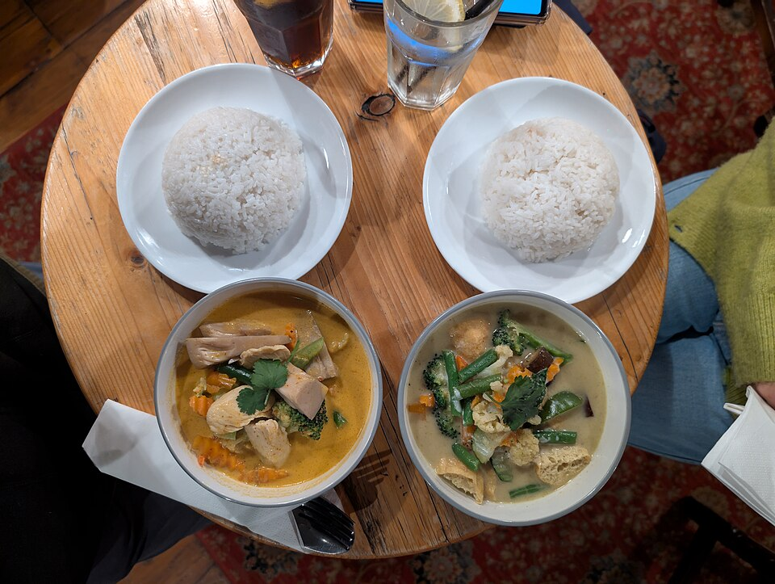

Native flashcards for learning Thai, with signed courses you can install on iPhone, iPad, and Mac.
A six-lesson reference course with Thai vocabulary, listening cards, explanations, recipes, and licensed public media.